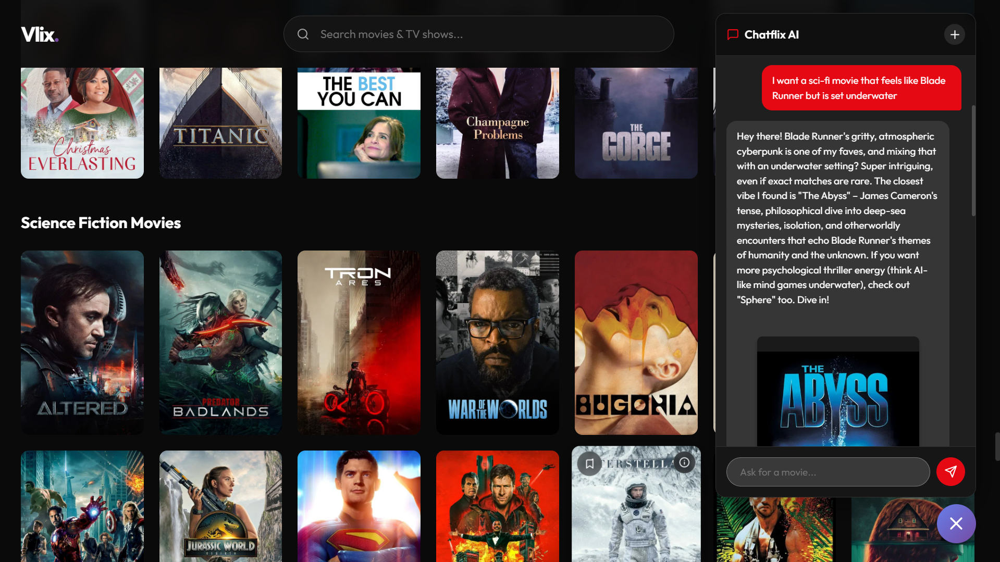
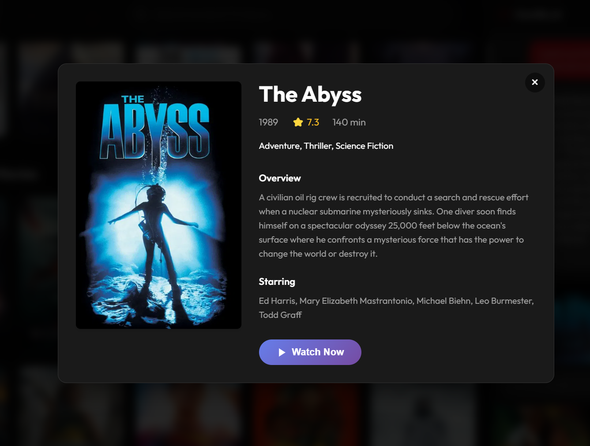
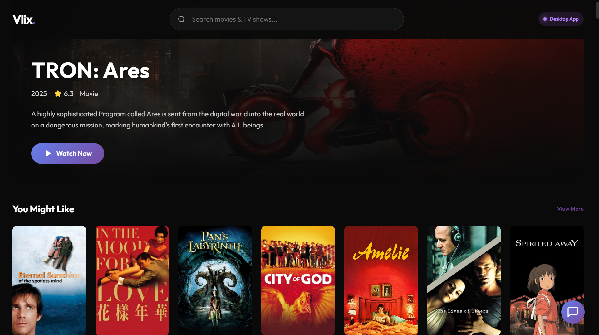

Why Vlix?

The "Search Bar" is a Movie Nerd.
We integrated a fast and friendly LLM directly into the app's core. It’s not just a chatbot; it controls the navigation.
It prioritizes your experience over your command. Ask for a movie you've already seen, and it might suggest a sequel or something with a similar vibe instead. It remembers your taste, your history, and your passing comments.

Popups are Physically Impossible.
The main reason we built native apps instead of just a website? To kill the ads.
Our custom heuristic adblocker nukes overlays and popups from stream providers before they even load. When you press Play, the movie starts. No "sketchy website" redirects, no 15-second commercials. Just 1080p streaming.

Discovery is the New Battleground.
We don't care what studio made the movie. We don't care about licensing windows. We just care about what you want to watch.
Big streaming services are too terrified to let an AI drive the experience because they need to push their Originals. Vlix is different. We help you find the best content, regardless of where it comes from.